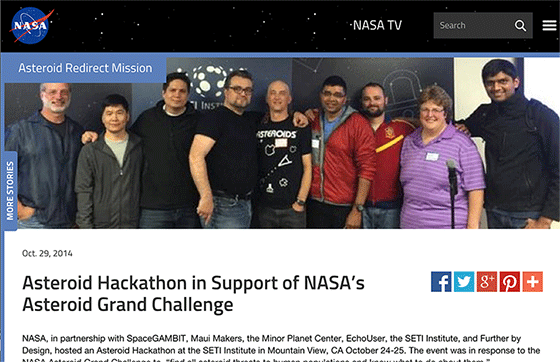

The Origins
NASA, in partnership with SpaceGAMBIT, Maui Makers, the Minor Planet Center, EchoUser, the SETI Institute, and Further by Design, hosted an Asteroid Hackathon at the SETI Institute in Mountain View, CA October 24-25. The event was in response to the NASA Asteroid Grand Challenge to: “Find all asteroid threats to human populations and know what to do about them.” NASA Centennial Challenges were initiated in 2005 to directly engage the public in the process of advanced technology development. The program offers incentive prizes to generate revolutionary solutions to problems of interest to NASA and the nation.The Hackathon
Team NOVA’s ( Kris Robison, Rajagopal Sathyamurthi, Daniel Schwartz, DJ Ursal) overall winning solution at the NASA’s Asteroid Hackathon, Ask Major Tom (fully interactive!), allowed users to explore relationships among data. The elegant user interface captured the audience and judges attention, but it was the potential insighat and learning opportunities that hackathon participants experienced in the science fair portion of judging that really impressed the judges. More than once, people discovered relationships among asteroid data parameters that they did not previously know about. A perfect outcome for one of the primary goals: Increase public knowledge regarding asteroids.The Launch
After winning the NASA hackathon, Team Nova through the Oracle Volunteers program continued the mission with Minor Planet Center, which works under the umbrella of Smithsonian Astrophysical Observatory (SAO), to deliver a production-level quality version of the project that can be used by both scientists and the public-at-large. The product was re-named MPC Data Explorer but the goal remains the same: To allow all people to discover, learn and share information about asteroids to increase awareness about asteroids and their impact and risks to the world. We are excited to see where the project goes from here as well as furthering sapce education and safety!Acknowldegements
Minor Planet Center Team: Dr José Luis Galache and Michael Rudenko
Oracle Volunteering Team: DJ Ursal, Daniel Schwartz, Kris Robison, Raymond Xie, and Jeremy Ashley
Released under the Apache License 2.0.
Technologies: Ruby on Rails, HTML5, CSS3, Javascript, Bootstrap, Fontawesome, and Crossfilter (Square, Inc.)